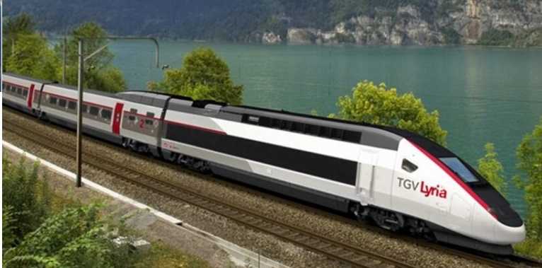
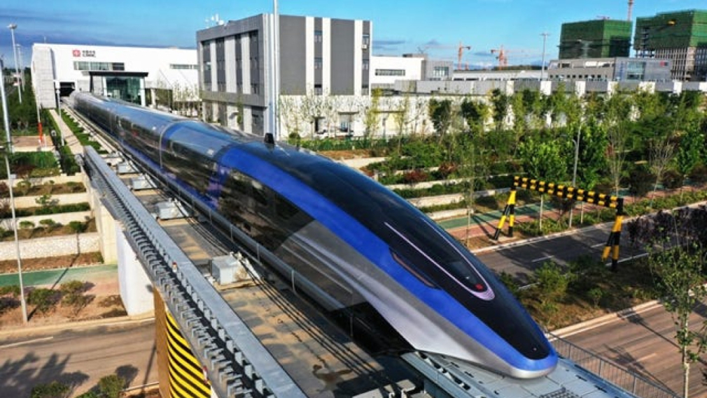

Популярни високоскоростни влакове

Bullet Train (Япония)
Японският влак Shinkansen е световноизвестен с бързината и прецизността си. Той може да достигне скорости от 320 км/ч.

TGV (Франция)
TGV е емблематичният френски високоскоростен влак, който развива до 320 км/ч и е известен с комфорта си.

Maglev (Китай)
Маглев влакът в Китай използва магнитна левитация, за да достигне скорости над 430 км/ч, превръщайки го в най-бързия влак в света.